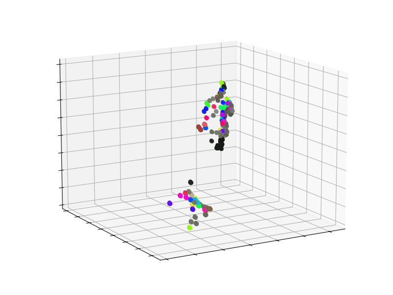

Our system captures movements from multiple 2D camera views (top) and reconstructs them into a 3D model (below). In the 3D visualization, trajectory points are colored based on their visibility: if the first point of a track is occluded, it's shown in the track's color; otherwise, it inherits the color from the corresponding 2D pixel in the track.
LAPA (Look Around and Pay Attention) is a novel end-to-end transformer-based architecture for multi-camera point tracking. Unlike traditional approaches that separate detection, association, and tracking into distinct stages, LAPA jointly reasons across views and time through attention mechanisms. By encoding epipolar geometry directly into cross-view attention, LAPA creates a differentiable mechanism that optimizes appearance and geometric consistency simultaneously. This allows the system to handle occlusions effectively by shifting attention to views where points remain visible, maintaining continuous tracking even through complex motion patterns.
Our approach employs a unified framework that integrates all stages of detection, correspondence, and tracking into a differentiable pipeline.
The key components include:
In this demo, the user picks tracking points in 2D in any view. Using the trained correspondence model and camera calibration, we find the corresponding points in other views and then track them in 3D. Upon acceptance, the interactive demo will be released on HuggingFace.